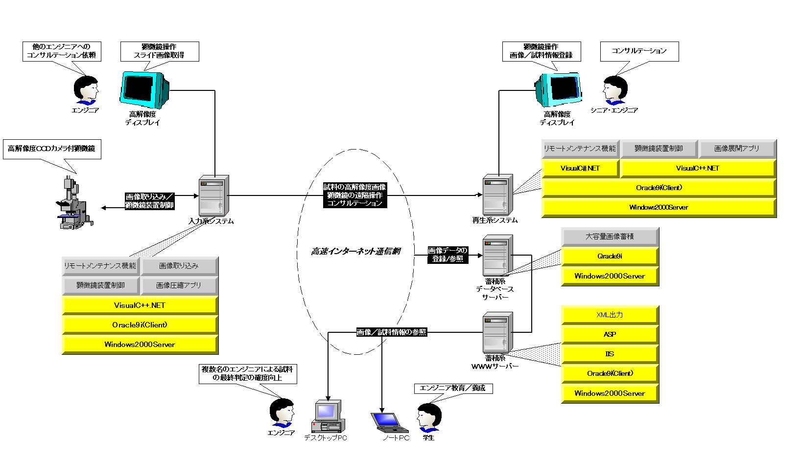

インターネットで試料の写真/情報を公開する機能を備えています。
顕微鏡を遠隔操作するところで、遠くから
「見ている範囲の外側を見たい」
「もっと拡大して見たい」
「全体を見たい」
などの要望に答えられます。
またインターネットでの試料の写真/情報を公開する機能は、
ほかの分野の専門家のアドバイスを受けたり専門家教育などに利用できます。
例えば、微細加工技術を使った製品を開発している企業で、
開発プロジェクトのメンバーが分散している場合、
打ち合わせのたびにメンバー/試作品の移動による無理/無駄が発生します。
このようなときに本システムの顕微鏡の遠隔操作や、
インターネットでの試料の写真/情報を公開する機能が無理/無駄を省きます。
